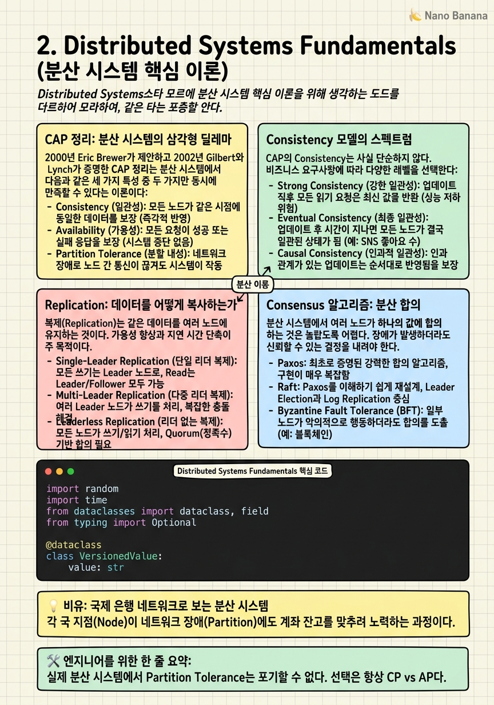

Distributed Systems Fundamentals

🎯 학습 목표
- CAP 정리를 정확히 설명하고 CP/AP 시스템의 실제 예를 들 수 있다
- Strong consistency, Eventual consistency, Causal consistency의 차이를 설명할 수 있다
- Leader-Follower Replication의 동작 방식과 failover를 설명할 수 있다
- Paxos/Raft consensus 알고리즘이 왜 필요한지 설명할 수 있다
- 분산 시스템에서 시간의 문제(Clock Skew, Vector Clock)를 이해한다
분산 시스템은 네트워크로 연결된 여러 독립 컴퓨터가 하나처럼 동작하는 것처럼 보이는 시스템이다. 싱글 서버의 한계를 극복하기 위해 반드시 필요하지만, 분산 자체가 새로운 복잡성을 만들어낸다. 이 챕터에서 다루는 이론은 "이 DB는 왜 이렇게 설계되었는가", "왜 이 캐시는 강한 일관성을 보장하지 못하는가"에 대한 근본 답이다.
빅테크 면접에서 "왜 MySQL이 아니라 Cassandra를 썼어?"라는 질문에 단순히 "Cassandra는 빨라요"라고 답하는 건 F다. "Cassandra는 AP 시스템으로 availability를 일관성보다 우선합니다. 이 서비스는 read/write 모두 지연이 없어야 하고, 짧은 시간의 데이터 불일치를 허용하므로 Cassandra가 적합합니다"가 A다.
이 챕터의 내용은 처음에는 추상적으로 느껴질 수 있다. 하지만 챕터 3(스토리지), 챕터 4(캐시), 챕터 7(실전 설계)에서 구체적인 시스템에 적용하면서 자연스럽게 체화된다.
핵심 내용
CAP 정리: 분산 시스템의 삼각형 딜레마
2000년 Eric Brewer가 제안하고 2002년 Gilbert와 Lynch가 증명한 CAP 정리는 분산 시스템에서 가장 유명한 이론이다.
Consistency (C) = 모든 노드에서 동시에 같은 데이터를 읽는다. 쓰기 직후 어느 노드에서 읽어도 최신값이 보인다.
Availability (A) = 노드 일부가 죽어도 시스템이 응답을 반환한다. 응답이 최신값이 아닐 수도 있다.
Partition Tolerance (P) = 네트워크 단절(partition)이 발생해도 시스템이 계속 동작한다.
CAP 정리의 핵심은 P는 실제 분산 시스템에서 포기할 수 없다는 것이다. 네트워크는 언제든 끊길 수 있다. 따라서 실제 선택은 CP (partition 시 consistency 우선, availability 포기) vs AP (partition 시 availability 우선, consistency 포기)다.
| 분류 | 예시 시스템 | 특징 | |---|---|---| | CP | HBase, Zookeeper, Redis (single node) | 네트워크 분단 시 일부 요청 거절, 데이터 일관성 보장 | | AP | Cassandra, CouchDB, DynamoDB | 네트워크 분단 시에도 응답, 일시적 불일치 허용 | | CA | RDBMS (single node) | 분산 환경에선 실제로 CA는 존재하지 않음 |
중요한 점은 CAP이 이분법이 아니라는 것이다. "이 시스템은 무조건 CP"가 아니라, 특정 연산에서 C와 A 사이의 지점을 선택하는 것이다.
Consistency 모델의 스펙트럼
CAP의 Consistency는 사실 단순하지 않다. 실제로는 강도에 따른 스펙트럼이 존재한다.
Strong Consistency (선형화 가능성, Linearizability) — 쓰기 완료 즉시 모든 읽기가 최신값을 반환한다. 가장 직관적이지만 지연시간이 크고 구현이 어렵다. Single-leader replication에서 synchronous follower 복제로 달성 가능하다. 예: Google Spanner.
Sequential Consistency — 모든 프로세스가 같은 순서로 연산을 관찰한다. 물리적 시간 순서와는 다를 수 있다. Linearizability보다 약하지만 여전히 강한 모델이다.
Causal Consistency — 인과 관계가 있는 연산(A가 B를 유발함)만 순서를 보장한다. 연관 없는 연산은 순서가 달라도 된다. 많은 분산 데이터베이스가 채택한 실용적 모델이다.
Eventual Consistency — 충분한 시간이 지나면 모든 복제본이 같아진다. 언제 같아질지는 보장하지 않는다. 가용성과 성능에서 가장 유리하다. DynamoDB, Cassandra의 기본 모드.
| 모델 | 지연 | 가용성 | 구현 복잡도 | |---|---|---|---| | Linearizability | 높음 | 낮음 | 매우 높음 | | Sequential | 중간 | 중간 | 높음 | | Causal | 낮음 | 높음 | 중간 | | Eventual | 최저 | 최고 | 낮음 |
실제 빅테크 시스템에서 사용자 프로필, 계좌 잔액처럼 정확해야 하는 데이터는 strong consistency를, 소셜 미디어 좋아요 수, 조회수처럼 약간의 오차가 허용되는 데이터는 eventual consistency를 쓴다.
Replication: 데이터를 어떻게 복사하는가
복제(Replication)는 같은 데이터를 여러 노드에 유지하는 것이다. 목적은 두 가지다: 가용성(노드 하나가 죽어도 됨)과 성능(읽기를 여러 노드에 분산).
Single-Leader Replication (Master-Slave)
쓰기는 오직 Leader(Master)로만 간다. Leader는 변경사항을 Replication Log에 기록하고 Follower(Replica)에 전송한다. Follower는 log를 적용해 자신을 업데이트한다.
- Synchronous Replication: Leader가 최소 하나의 Follower에 쓰기 완료 확인을 받고 클라이언트에 응답 → 데이터 유실 없음, 쓰기 지연 증가 - Asynchronous Replication: Leader가 Follower 확인 없이 즉시 응답 → 빠르지만 Leader 장애 시 데이터 유실 가능
Multi-Leader Replication
여러 Leader가 쓰기를 받고 서로 복제한다. 다중 데이터센터에서 지연시간을 줄이기 위해 쓴다. 단점은 Write Conflict — 두 리더에서 같은 데이터를 동시에 변경하면 어떻게 해결할까? Last-Write-Wins(LWW), Custom conflict resolution function 등의 전략이 필요하다.
Leaderless Replication (Dynamo-style)
Leader 없이 모든 노드에 쓰기 가능. Quorum 방식: 쓰기는 W개 노드에서 확인, 읽기는 R개 노드에서 읽어서 최신값 결정. \(W + R > N\) (N = 총 노드 수) 이면 적어도 하나의 노드가 최신값을 가진다. Cassandra, DynamoDB가 이 방식.
Consensus 알고리즘: 분산 합의
분산 시스템에서 여러 노드가 하나의 값에 합의하는 것은 놀랍도록 어렵다. 네트워크 지연, 노드 장애, 메시지 손실이 있는 환경에서 합의를 달성하는 알고리즘이 Consensus 알고리즘이다.
왜 필요한가? Leader Election — 여러 노드 중 누가 Leader인지 합의해야 한다. 하나의 Leader만 있어야 하므로 (split-brain 방지), 합의 알고리즘 없이는 두 노드가 동시에 자신이 Leader라고 주장할 수 있다.
Paxos — 2001년 Leslie Lamport가 설계한 최초의 실용적 consensus 알고리즘. 이론적으로 완벽하지만 이해하기 어렵고 구현이 복잡하다. Google Chubby, Apache Zookeeper에서 사용.
Raft — 2014년 Diego Ongaro가 "이해 가능성"을 목표로 설계. Paxos와 동등한 안전성을 가지면서 훨씬 이해하기 쉽다. etcd, CockroachDB, TiKV 등 현대 분산 시스템에서 널리 사용된다.
Raft의 핵심 아이디어는 세 가지로 분리된다:
1. Leader Election — 타임아웃 후 Candidate가 되어 투표 요청, 과반수 투표 받으면 Leader 2. Log Replication — Leader가 log entry를 모든 Follower에 복제, 과반수 확인 후 commit 3. Safety — 이미 commit된 entry는 절대 덮어쓰지 않음
면접에서 Paxos/Raft를 구현하라는 요청은 없다. 하지만 "Zookeeper는 어떻게 leader election을 하나요?", "Kafka의 ISR (In-Sync Replicas)가 뭔가요?"에 답할 수 있어야 한다.
분산 시스템의 8가지 오류와 시간 문제
1994년 Peter Deutsch가 제시한 분산 컴퓨팅의 8가지 오류(Fallacies of Distributed Computing)는 지금도 유효하다:
1. 네트워크는 신뢰할 수 있다 2. 지연시간은 0이다 3. 대역폭은 무한하다 4. 네트워크는 안전하다 5. 토폴로지는 변하지 않는다 6. 관리자는 한 명이다 7. 전송 비용은 0이다 8. 네트워크는 균일하다
이 오류들이 중요한 이유는 분산 시스템의 거의 모든 복잡성이 여기서 비롯되기 때문이다.
특히 시간의 문제는 미묘하다. 분산 시스템에서 "이 이벤트가 저 이벤트보다 먼저 일어났다"를 확신하기 어렵다. 각 노드의 물리적 시계(clock)는 조금씩 다르게 간다(Clock Skew). NTP로 동기화해도 수 밀리초의 오차는 피할 수 없다.
Lamport Timestamp — 물리적 시계 없이 인과 순서를 표현하는 논리 시계. 각 프로세스가 카운터를 유지하고, 메시지 전송 시 카운터를 포함. 받는 쪽은 자신의 카운터와 받은 카운터 중 큰 값 + 1로 업데이트.
Vector Clock — Lamport Timestamp의 확장. 각 프로세스마다 카운터를 따로 관리하는 벡터. 두 이벤트의 인과 관계가 있는지 없는지(concurrent)를 판별할 수 있다. DynamoDB의 conflict detection에 사용됨.
시스템 설계 면접에서 이 개념들은 "두 사용자가 동시에 같은 데이터를 수정하면?"이라는 질문에 답할 때 필요하다.
💡 비유로 이해하기
분산 시스템은 전 세계에 지점이 있는 국제 은행과 같다. 서울 지점, 뉴욕 지점, 런던 지점이 있고 각 지점은 독립적으로 거래를 처리한다. 지점들은 네트워크(SWIFT 같은)로 연결되어 있다.
이 은행에서 CAP 딜레마가 생기는 순간을 생각해보자. 서울-뉴욕 간 통신이 끊겼다(Partition). 이때 서울 고객이 100만원을 인출하면 어떻게 해야 하나? Consistency를 선택하면: 서울 지점은 "죄송합니다, 현재 거래가 불가합니다"라고 거절한다. 잔액이 정확하게 동기화될 때까지 서비스를 중단한다. Availability를 선택하면: 서울 지점은 자신이 알고 있는 잔액으로 거래를 처리한다. 통신이 복구되면 뉴욕 지점과 데이터를 조정한다. 이때 두 곳에서 동시에 출금이 됐다면 conflict가 발생한다.
계좌 잔액처럼 정확성이 중요한 데이터는 CP를, 소셜 미디어 좋아요 수처럼 약간의 오차를 허용할 수 있는 데이터는 AP를 선택하는 이유가 여기에 있다.
💻 코드 예시
Quorum 기반의 분산 Key-Value 스토어 시뮬레이션이다. Cassandra/DynamoDB의 W+R>N 원칙을 구현하여 eventual consistency와 quorum read가 어떻게 동작하는지 보여준다.
import random
import time
from dataclasses import dataclass, field
from typing import Optional
@dataclass
class VersionedValue:
value: str
timestamp: float
version: int
@dataclass
class Node:
node_id: int
store: dict = field(default_factory=dict)
is_available: bool = True
def write(self, key: str, value: str, version: int) -> bool:
if not self.is_available:
return False
self.store[key] = VersionedValue(value, time.time(), version)
return True
def read(self, key: str) -> Optional[VersionedValue]:
if not self.is_available:
return None
# Simulate network latency
time.sleep(random.uniform(0.001, 0.01))
return self.store.get(key)
class QuorumKVStore:
def __init__(self, n: int, w: int, r: int):
self.nodes = [Node(i) for i in range(n)]
self.N, self.W, self.R = n, w, r
self._version = 0
assert w + r > n, "W + R must be > N for strong consistency"
def write(self, key: str, value: str) -> bool:
self._version += 1
successes = sum(
node.write(key, value, self._version)
for node in self.nodes
)
return successes >= self.W # Quorum write success
def read(self, key: str) -> Optional[str]:
results = [
node.read(key) for node in self.nodes
]
valid = [r for r in results if r is not None]
if len(valid) < self.R:
return None # Quorum not met
# Return the value with the highest version (latest)
latest = max(valid, key=lambda v: v.version)
return latest.value
# N=3, W=2, R=2 → W+R=4 > N=3 → quorum consistency guaranteed
store = QuorumKVStore(n=3, w=2, r=2)
store.nodes[2].is_available = False # Simulate one node down
store.write("user:1001", "Alice")
print(store.read("user:1001")) # Still works: 2 out of 3 nodes respondW=2, R=2, N=3에서 노드 하나가 죽어도 쓰기(2/3 성공)와 읽기(2/3 성공)가 모두 가능하다. W+R=4 > N=3이므로 최소 1개 노드가 최신 값을 반환한다. 노드가 2개 죽으면 서비스가 중단된다(CP 모드). W=1, R=1로 바꾸면 AP 모드 — 한 노드만 살아있어도 응답하지만 stale data를 반환할 수 있다.
🏭 현업에서의 평가
✅ 시니어가 보는 것
- CAP을 정확히 알고, 실제 시스템에 어떻게 적용되는지 예를 들 수 있는가
- Eventual consistency를 쓸 때 어떤 문제가 생길 수 있고 어떻게 해결하는가
- Replication lag가 서비스에 미치는 영향을 설명할 수 있는가
- Leader election이 실패하면 어떻게 되는지 알고 있는가
⚠️ 레드 플래그
- "Cassandra가 빠르기 때문에"처럼 이유 없는 기술 선택
- CAP을 외웠지만 구체적 시스템 예를 못 드는 경우
- Eventual consistency의 trade-off를 모르는 경우
- Single point of failure를 설계에 방치하는 경우
🎤 예상 인터뷰 질문
- DynamoDB는 CAP의 어디에 위치하나? 그 이유는?
- Multi-leader replication에서 write conflict를 어떻게 해결하나?
- "Read your own writes" consistency를 어떻게 보장하나?
✨ 핵심 요약
P는 포기 불가
실제 분산 시스템에서 Partition Tolerance는 포기할 수 없다. 선택은 항상 CP vs AP다.
Consistency는 스펙트럼
Strong → Sequential → Causal → Eventual 스펙트럼. 서비스의 데이터 특성에 맞는 수준을 선택하라.
Quorum: W+R>N
이 조건이 성립하면 최소 하나의 노드가 최신값을 반환한다. Cassandra의 기본 원리다.
Raft가 Paxos를 대체
현대 시스템은 대부분 이해하기 쉬운 Raft를 사용한다. etcd, CockroachDB, TiKV가 모두 Raft 기반.
시계는 믿을 수 없다
분산 시스템에서 물리적 시계의 Clock Skew 때문에 이벤트 순서를 시간으로 판단하면 위험하다. Lamport Timestamp나 Vector Clock을 쓴다.
Replication Lag를 인지하라
Async replication은 빠르지만 Leader 장애 시 데이터 유실 가능. Read Replica에서 읽으면 stale data를 볼 수 있다.
단일 장애점을 없애라
단일 Leader, 단일 DB, 단일 서버는 Single Point of Failure다. 항상 이중화를 고려하라.
이론은 결정의 근거
면접에서 기술을 선택할 때 반드시 이론적 근거로 정당화하라. 이것이 주니어와 시니어를 가른다.